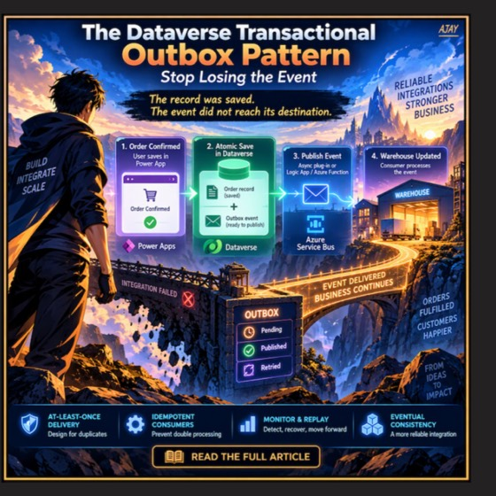
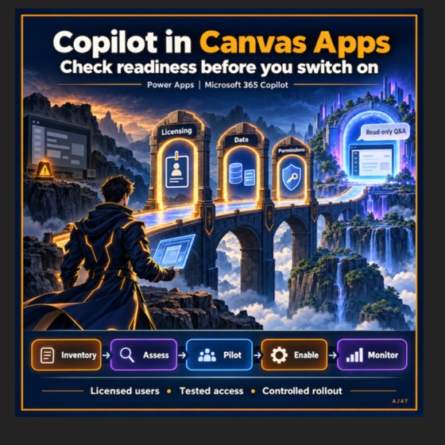
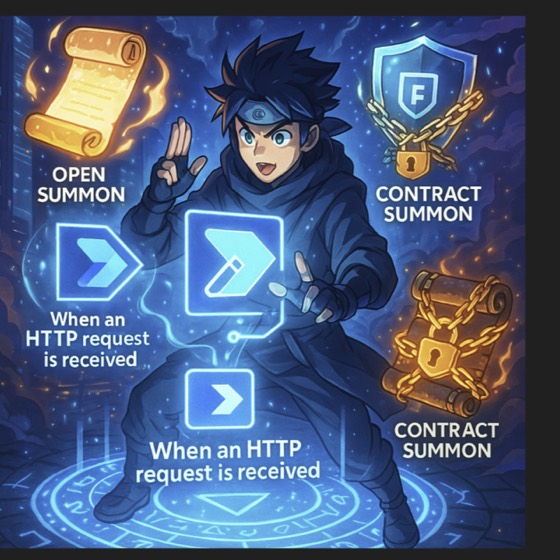
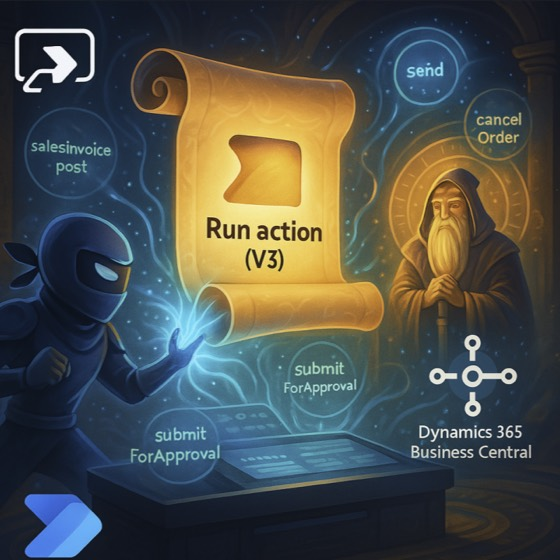

UI Brand Kit · v1.0 · November 2026
The Shinobi Architect design system
An anime-inspired visual identity for Ajay Kumar Gannamaneni: night skies, glowing energy and frosted glass, built on the disciplined structure of an enterprise architect. Four themes share one set of tokens, so every component works in every theme.
Like a shinobi: precise, quiet, prepared. Layouts are calm and structured; energy is saved for the moments that matter.
Like a sensei: everything teaches. Copy is plain English, and every effect has a purpose.
Like the work itself: tokens, components and rules, so the brand scales without drifting.
Identity
Ajay Kumar Gannamaneni
Microsoft MVP · Power Platform Architect
Chakra Petch 600. Use the full name on first mention; "Ajay" in conversational copy.
Keep clear space equal to half the mark's height on every side. Never stretch, rotate or recolour the gradient outside the theme palettes.
Colour & themes
Each theme is a complete palette. The site defaults to Midnight Chakra, and to Sakura Dawn for visitors whose system is set to light mode. Click a theme to apply it to this page.
Contrast checks
Calculated live from each theme's tokens. AA requires 4.5:1 for body text and 3:1 for large text and UI.
Typography
Systems that hold up
Section headline 52 / 1.05
Card title 19 / 1.3
Angular, HUD-like and technical. Headlines, numbers, card titles and the wordmark.
Body copy is set at 17px with a 1.65 line height. Keep paragraphs short, sentences plain and claims specific. The design carries the energy; the words carry the facts.
Mono · IBM Plex Mono 400–500LABELS · KICKERS · CODE · 1.4.0.15
壱 弐 参 修行 巻物
Kanji accents only: section numerals and subtitles. Never for body text, and always paired with the English word.
| Token | Size | Weight | Use |
|---|---|---|---|
display-xl | 40–72px fluid | 600 | Hero headline |
display-l | 32–52px fluid | 600 | Section headings |
display-m | 19–28px | 600 | Card and panel titles |
body | 17px / 1.65 | 400 | Paragraphs |
small | 13.5–15px | 400–500 | Supporting copy, captions |
label | 11.5–13px mono, uppercase, +0.08em | 500 | Kickers, metadata, tags |
Effects
The signature effects. Move your pointer over the specimens: they're the same CSS the site uses.
background: linear-gradient(150deg, var(--surface-2), var(--surface));
backdrop-filter: blur(16px) saturate(150%);
border: 1px solid var(--line);
box-shadow: inset 0 1px 0 rgb(255 255 255 / .07),
0 24px 60px -30px rgb(0 0 0 / .75);--ang property..aura::after {
background: conic-gradient(from var(--ang), transparent 0 50%,
var(--accent) 68%, var(--accent-2) 80%, var(--accent-3) 90%, transparent);
mask: linear-gradient(#000 0 0) content-box, linear-gradient(#000 0 0);
mask-composite: exclude;
animation: aura-spin 6s linear infinite;
}--mx and --my.background:
radial-gradient(420px circle at var(--mx) var(--my),
color-mix(in srgb, var(--accent) 14%, transparent), transparent 46%),
linear-gradient(150deg, var(--surface-2), var(--surface));.btn.primary::after {
background: linear-gradient(100deg, transparent, rgb(255 255 255 / .55), transparent);
transform: skewX(-20deg); left: -60%;
}
.btn.primary:hover::after { left: 130%; }.grad {
background: var(--grad);
background-clip: text; color: transparent;
}
filter: drop-shadow(0 0 22px color-mix(in srgb, var(--accent) 38%, transparent));/* Manga speed lines behind hero objects */
background: repeating-conic-gradient(
color-mix(in srgb, var(--accent) 22%, transparent) 0deg 1.2deg,
transparent 1.2deg 9deg);
mask: radial-gradient(circle, transparent 34%, #000 36%, transparent 70%);Aurora sky
Three blurred colour fields drift slowly behind the page, with a star layer on dark themes. They give depth without competing with content.
Sparks, embers, fireflies, petals
A light canvas layer: rising energy sparks in dark themes, falling sakura petals in Sakura Dawn. 14–36 particles, paused when the tab is hidden.
Corner brackets
Stat tiles use anime-HUD corner marks in the accent colour, so numbers read like a status screen.
Components
One primary action per view. Labels are verbs: "Try the playground", not "Click here".
- Dataverse
- Azure Functions
- PCF
Rank badges
S for enterprise-scale, multi-team or multi-country work; A for business-critical, single-domain work. Always explain the ranks in a key.
Playground
Kanji numeral, mono index, display title and brush subtitle. The kanji must be correct; see the table below.
- HUD stat tile
- 104
- Counts up on reveal
- 23
- Corner brackets
- 6+
- Tabular numbers
- 3
Motion
| Pattern | Duration | Easing | Where |
|---|---|---|---|
| Micro interaction | 150–250ms | cubic-bezier(.2,.8,.2,1) | Hover, focus, chip toggles |
| Card lift & glow | 300–350ms | same | Cards, buttons, covers |
| Section reveal | 800ms, blur 4px → 0 | same | Content entering the viewport |
| Hero word rise | 900ms, 70ms stagger | same | Hero headline only |
| Aura ring | 6s loop (12s on large panels) | linear | MVP card, playground |
| Aurora drift | 26–38s alternate | same | Background only |
With prefers-reduced-motion, every loop stops, reveals are instant and particles are off. Content never depends on animation.
Motifs & rules
| 壱 弐 参 肆 伍 陸 漆 捌 玖 | Formal numerals 1–9 (section numbers) |
| 自己紹介 | Self-introduction · About |
| 栄誉 | Honour · MVP & community |
| 設計 | Design · Architecture |
| 任務 | Mission · Work |
| 修行 | Training · Playground |
| 経歴 | Career · Experience |
| 資格 | Qualifications · Credentials |
| 巻物 | Scrolls · Writing |
| 連絡 | Contact |
| 建築家 | Architect · hero watermark |
- Use original art: night skies, glowing energy, gold scrolls and the hooded hero from your covers.
- Keep anime flavour in metaphor and accents ("summon", "scroll", "mission") while the substance stays professional.
- Put the MVP award and real outcomes first; effects support them.
- Check contrast in every theme before shipping a new colour.
- Use characters, logos or symbols from existing anime or manga series.
- Alter the Microsoft MVP logo or use it as the site's logo; show it as earned, in photos or official badges.
- Stack more than one animated border in the same view.
- Set body text in the brush typeface or use untranslated kanji.
Imagery
Square 1:1 covers in the cinematic night-sky style: deep blue and violet skies, glowing UI panels, gold highlights, and the original hooded hero facing the system he is building.




Tokens
The source of truth lives in assets/styles.css. Each theme sets the same variables, and components only read variables, never raw colours.